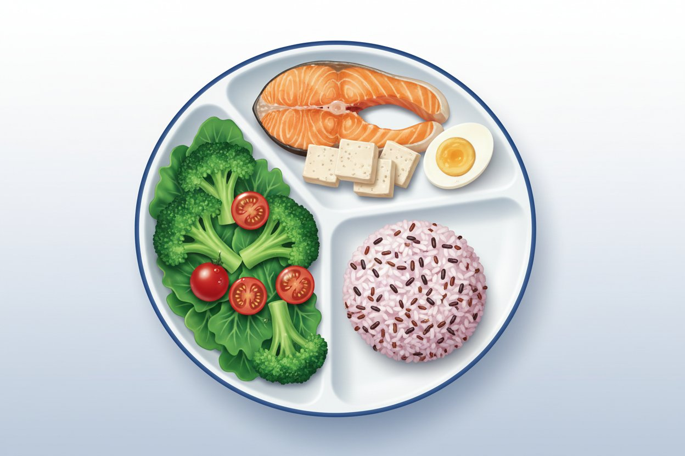

왜 천천히 빼야 할까요?
왜 천천히 빼야 할까요?

굶거나 단식하면 생기는 일
- 굶거나 단식하면 근육부터 함께 빠지고, 몸이 에너지를 아끼는 '저전력 모드'로 바뀌면서 요요가 오기 쉽습니다.
- 탄수화물을 전부 끊을 필요는 없습니다. 줄여야 하는 것은 흰쌀·빵·단 음료 같은 정제 탄수화물이고, 단백질과 채소는 그대로 유지합니다.
체중이 빠지는 방식
- 체중은 계단식으로 빠집니다. 며칠 정체돼도 실패가 아니며, 1년 이상 꾸준히 유지해야 몸의 기준점이 서서히 바뀝니다.
- 목표는 한 달 2kg 안팎(주 0.5~1kg 이내)이 정답입니다 — 빨리 빼기보다 오래 유지하는 속도가 중요합니다.
 한눈에 보는 핵심 수치 (한국 성인 기준)
한눈에 보는 핵심 수치 (한국 성인 기준)
| 구분 | 기준 수치 | 임상적 의미 및 권고 |
|---|---|---|
| 과체중 기준 | BMI 23 이상 | 아시아 성인 기준 과체중 단계 |
| 비만 기준 | BMI 25 이상 | 한국 성인 비만 진단 기준 |
| 복부비만 기준 | 허리둘레 남 90cm·여 85cm 이상 | 한국인 복부비만 진단 기준 |
| 첫 감량 목표 | 6개월간 현재 체중의 5~10% 감량 | 혈압·혈당·중성지방 등 대사 지표 개선에 도움 |
| 권장 감량 속도 | 한 달 2kg 안팎 (주 0.5~1kg) | 평소보다 하루 500~1,000kcal 적게 섭취 시 안전한 감량에 도움 |
| 유지 기간 | 1년 이상 | 몸의 기준점이 서서히 바뀌는 기간 |
나의 목표 감량 속도는 건강 상태에 맞춰 진료 때 함께 정합니다.
 실천 원칙 (Do & Don't)
실천 원칙 (Do & Don't)
| 구분 | ||
|---|---|---|
| 식사 |
1. 흰쌀·빵·단 음료 같은 정제 탄수화물만 줄이기 2. 단백질·채소는 끼니마다 그대로 유지 · 하루 500~1,000kcal 적게 먹으면 주 0.5~1kg 감량에 도움 |
1. 극단적인 단식·굶기·식사 거르기 2. 고기·단백질 한 가지만 먹고 탄수화물 완전히 끊기 |
| 운동·점검 |
3. 근력 운동을 함께해 근육 지키기 · 중강도 유산소 주 150분+ 및 근력 운동 주 2~3회 권장 4. 인바디·체중은 하루 숫자보다 몇 주 흐름으로 보기 — 수분 상태에 따라 흔들립니다
|
3. 며칠 정체됐다고 포기하기 — 계단식 정체는 정상입니다 4. 목표 체중에 도달했다고 관리를 바로 끝내기
|
 흔한 오해
흔한 오해
| 흔한 오해 | 올바른 사실 |
|---|---|
| "적게 먹을수록 빨리 빠져서 좋다" | 빨리 빼면 근육 손실과 절전 반응이 커져 오히려 요요 위험이 높아집니다. |
| "밥 끊고 고기만 먹으면 된다" | 탄수화물을 전부 끊을 필요는 없습니다. 정제 탄수화물만 줄이면 됩니다. |
식사를 심하게 제한하는 중 실신·의식 저하·물도 못 마시는 상태가 있으면 계획을 멈추고 응급실로 가세요. 반복 구토·일상생활이 어려운 쇠약감이 있으면 즉시 진료받으세요. 당뇨약 복용 중이면 식사를 크게 줄이기 전에 의료진과 먼저 상의하세요. (☏ 031-893-4560)